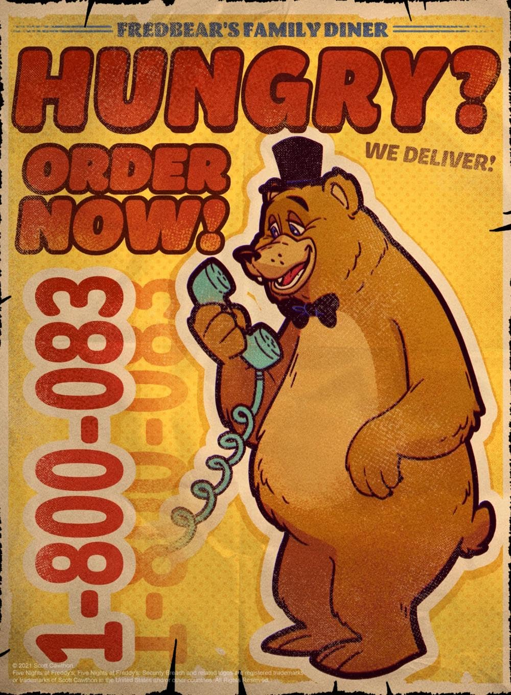
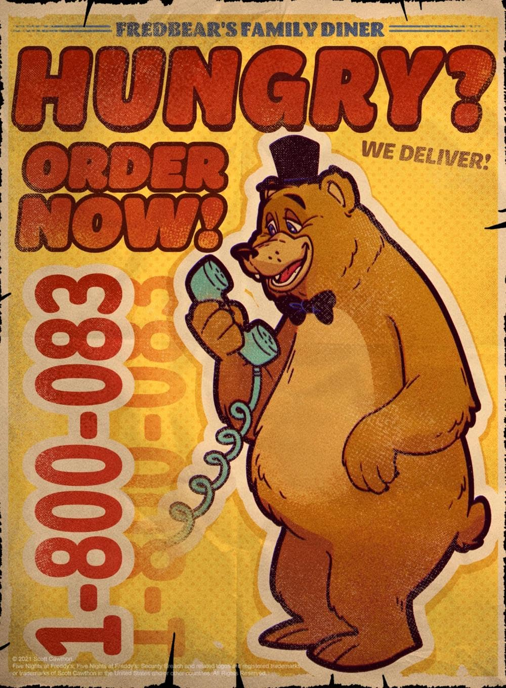

Welcome to FNaF Timeline Theories!
Why Theorize About the Timeline?
There have been several different horror games over the years, and they all have made their staples in history. There are some that are old and some that are new, but one horror game series has had the same impact on modern horror- the Five Nights at Freddie’s franchise. Even though the original game didn’t have a lot to it, it was something that was different. The lore of the game played a huge part in why it was so popular.

FNaF burst into the horror scene in 2014 and has stayed an important part of the genre all the way into today- through the main games, the side games, the novels, coloring books and an incredibly popular movie. But one of the most difficult things about the whole franchise is figuring out the order of the story of the pizzeria. The story of Freddie’s is based around the man in the Golden Bonnie suit- William Afton. Afton is the main villain of the whole series in which he murders over a dozen kids. During his murder spree, he discovers the secret to immortal life. Years later, his son, Micheal, is the hero who tries to end his father after he gains immortality by being attacked in the fifth game of the series, Sister Location.
However the problem with the whole series is the timeline makes little to no sense. The small amount of lore that is seeded out about where and when each game takes place. The books themselves take place in worlds that seem to be parallels to the one in which the game takes place. So theorists of the horror community began to work to try and piece together the whole timeline. But the issue that fans have tried to solve throughout the decade that FNaF has existed is the story that it tells. Trying to piece the puzzles that have been given out. But there are so many issues and problems within solving the series.
However the problem with the whole series is the timeline makes little to no sense. The small amount of lore that is seeded out about where and when each game takes place. The books themselves take place in worlds that seem to be parallels to the one in which the game takes place. So theorists of the horror community began to work to try and piece together the whole timeline.
The issue that fans have tried to solve throughout the decade that FNaF has existed is the story that it tells. Trying to piece the puzzles that have been given out. But there are so many issues and problems within solving the series.
So what is the timeline issue?
The Troubling Timeline
The timeline starts in what is believed to be roughly 1950’s- due to the more realistic elements, such as the poster for Fredbear's Singing Show- a live dancing bear show, which was a cheap popular entertainment after the Great Depression. For William Afton to start the Freddie’s brand, he would need to have seen the show which he used as inspiration for the diner. So shortly after his success, he merged the knock off version- Chica’s Party World. Which was how he became the business partner for Henry Emily.
 

His youngest son’s death is pretty solidly placed in 1983, after he was forced close to the Freddy animatronic and his head was bit.This is what led to Afton killing Charlotte “Charlie” Emily outside the diner, as he blamed Henry for the death of his son. This led to Afton going on a murder spree of 5 kids in June of 1985. But this is where the biggest problem for the FNaF timeline comes in.
Elizabeth Afton- William Aftons’s daughter -dies after getting too close to Baby- an animatronic with a claw used to capture kids. However her death logically seems like it would come before the Crying Child’s- the only true best fitting name for the youngest Afton as no one has been able to create solid evidence stating his name. This is due to the fact that in FNaF 4- the only game of the originals to not take place at a pizzeria but at a house -Plushie FredBear, whom had a walkie talkie connected to William’s, tells Crying Child to “remember what he saw”. Crying Child also has a large fear of the animatronics. There’s also an empty girl’s room in that same minigame.
Also bringing in the structure of the animatronics, they appear to be some of the more early versions. So they most likely would come first in the timeline.


But there’s no way for Baby to be here- or anyone else from her resturant to exist. Afton has no motive to kill. Why would he be making killer robots at this point? None of his kids- which was the reason he wanted to take revenge on Henry Emily. So the question becomes, how would she be the death he saw?
But this all to say, the problem with the timeline goes deep. But why does it matter? To understand the what is going on in the games, you have to be able to understand the story itself. Without that, it's just working the night shirt at a deadly pizzeria. It's fun, but you miss out on a lot of important and fun little mysteries to solve. To be blunt, figure out the timeline has become a major part of the fun of the FNaF franchise. So look around to see what the story is saying.
Here are the orginal core four animatronics!